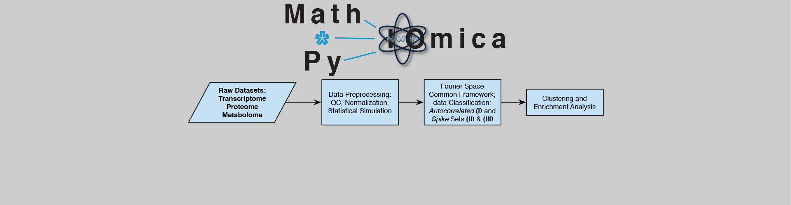

Omics Integration and Personalized Medicine

Data Integration with MathIOmica and PyIOmica. (mathiomica.org)
Microbiome metabolomics
Our personalized medicine investigations extend the concepts of precision medicine to the individual, assessing multiple omics during longitudinal profiling.
Omics analyses and integration requires extensive processing. MathIOmica and PyIOmica provide a user-friendly framework for handling downstream analysis and visualization.

Creating models necessitates robust omics datasets, particularly for time series analyses and network inference. We are creating multiple such sets available to the community.

Professor Mias joined MSU in 2014, conducting research in Personalized Medicine and Individualized Wellness. He is currently Division Chief of the Systems Biology Division, at the Institute for Quantitative Health Science and Engineering (IQ Center), and an Associate Professor of Biochemistry and Molecular Biology, an Adjunct Professor of Physics and Astronomy and of Pediatrics and Human Development.
The current research of the G.Mias lab focuses on the analysis and integration of existing (and developing) -omics technologies, their application to monitoring individuals as they transition through various physiological states, and their implementation towards personalized health. Professor Mias’ received funding through an NIH Pathway To Independence Award (K99\&R00) from the National Human Genome Research Institute. He is interested in systems medicine and particularly focusing on future implementation of personalized/precision medicine and genetics.
Prior to joining MSU, Professor Mias studied at Yale University, completing a combined BS/MS (magna cum laude with Distinction in Physics, 2001), MPhil (2003) and PhD in theoretical Physics (2007), while concentrating on statistical physics, quantum dynamics and critical phenomena. Following graduate school, he was a Lecturer/Assistant in Instruction at Yale University before joining the Laboratory of Dr. Michael Snyder as a Postdoctoral Scholar with the Department of Genetics at Stanford University.
Minzhang Zheng received Ph.D. in Physics from the University of Miami in 2020. He is currently working on characterizing biological longitudinal data using network and spectral methods, with applications to personalized personnel monitoring.
Chenxiang Luo received an M.D. She is currently working on our collboration with Dr. Bin Gu on characterizing NUT Carcinoma.
Shuyue Xue is a Physics student. She joined the lab in 2019, and is co-advised by Dr. Mias and Dr. Carlo Piermarocchi.
Natalie Currie is a Professorial Assistant. She joined the lab in 2020.
Faith Dawson is a Professorial Assistant. She joined the lab in 2021.
Jenn Abel is an undergraduate Professorial Assistant in the Honors College.
Keerthana Byreddy worked as a professorial assistant in the lab (2015-2017).
Michael Bennett is a Professorial Assistant. He joined the lab in 2018, and is interested in biochemistry and medical research implementations.
Calista Busch was a Professorial Assistant in the lab in 2019.
Priyanka Bhoopathi joined the lab as Professorial Assistant in 2018.
Curtis Bunger worked as a professorial assistant and research assistant in the lab (2014-2018). He was the recipient of a Larry D. Fowler Undergraduate Research Scholarship (2016) and a College of Natural Science Undergraduate Research Support Scholarship for Summer 2017.
Liz DeYoung continues her studies in medical school at MSU.
Ashley Garvin worked as a research assistant in the lab (2016-2018), while studying Genomics and Molecular Genetics through Lyman Briggs College. She was the recipient of a daadRISE scholarship and a Dr. Frank Peabody Microbiology Student Research Fund Award (MMG, 2017).
Brian Gutermuth majored in Biochemistry at MSU.
Kailinn Hairston worked as an undergraduate research assistant (2017-18) at Michigan State University, starting in the lab doing research through SROP (Summer Research Opportunities Program).
Jayna Lenders is an undergraduate Professorial Assistant in the Honors College.
Kenneth Jerome Matthews worked in the lab in the summer of 2018 as a SROP (Summer Research Opportunities Program) student.
Cameron Lochrie is an undergraduate Professorial Assistant and joined the lab in 2019.
Megha Pratapwar a Professorial Assistant. She joined the lab in 2020.
Hannah Rice is an undergraduate in the Honors College studying Fisheries and Wildlife with a concentration in Disease Ecology. She is interested in epidemiology and species conservation.
Lavida Rogers received a B.Sc. in Biology from the University of the Virgin Islands in May 2014. She enrolled in the Michigan State University Microbiology & Molecular Genetics PhD Program in the fall of 2014. Lavida is currently working on statistical methodology to process DNA and RNA sequencing data, including assessment for quality control and improvement of mapping algorithms. Lavida is supported by MSU AAGA and CNS fellowships. She is also the recipient of the Marvis Richardson Award (MMG, 2017). Lavida is currently an Assistant Professor of Biology at the University of the Virgin Islands.
Raeuf Roushangar joined the lab in 2014, and in 2018 completed his dual PhD in Biochemistry, and Bioinformatics and Computational Biology, with a dissertation on "Modeling Age-Dependent Gene Expression Variability in Acute Myeloid Leukemia Using a Linear Model". Raeuf was a Paul and Daisy Soros Fellowship recipient (2015).
Connor Schury is an undergraduate Professorial Assistant.
Alisha Ungkuldee is an undergraduate Professorial Assistant in the Honors College and Lyman Briggs Class of 2020. She hopes to continue her studies in medical school in the future.
Maddie Verlinde is an undergraduate Professorial Assistant in the Honors College.
Eren Veziroglu completed his Masters in Biomedical Engineering at MSU and is training to be a physician scientist.
Cathy Wiesner worked as a Lab Manager in the lab (2014-2015)
Tahir Yusufaly is a postoctoral fellow at the University of Southern California, Department of Physics and Astronomy.
MathIOmica/PyIOmica/*IOmica: unique platforms for multi-omics analysis.
Mathematica for bioinformatics: A Wolfram Language approach to Omics.
In a proof-of-principle clinical trial, we monitored a generally healthy individual and carried out integrative profiling on saliva before and after vaccination with the pneumococcal PPSV23 vaccine. This is to our knowledge the most extensive saliva-focused omics dataset on an individual, covering 100+ timepoints over one year. The period covers a healthy (baseline) period, as well as comprehensive monitoring of innate and adaptive immune responses following vaccination.
Mias, G.I., Singh, V.V., Rogers, L.R.K. et al. Longitudinal saliva omics responses to immune perturbation: a case study. Sci Rep 11, 710 (2021).
Abstract: "Saliva omics has immense potential for non-invasive diagnostics, including monitoring very young or elderly populations, or individuals in remote locations. In this study, multiple saliva omics from an individual were monitored over three periods (100 timepoints) involving: (1) hourly sampling over 24 h without intervention, (2) hourly sampling over 24 h including immune system activation using the standard 23-valent pneumococcal polysaccharide vaccine, (3) daily sampling for 33 days profiling the post-vaccination response. At each timepoint total saliva transcriptome and proteome, and small RNA from salivary extracellular vesicles were profiled, including mRNA, miRNA, piRNA and bacterial RNA. The two 24-h periods were used in a paired analysis to remove daily variation and reveal vaccination responses. Over 18,000 omics longitudinal series had statistically significant temporal trends compared to a healthy baseline. Various immune response and regulation pathways were activated following vaccination, including interferon and cytokine signaling, and MHC antigen presentation. Immune response timeframes were concordant with innate and adaptive immunity development, and coincided with vaccination and reported fever. Overall, mRNA results appeared more specific and sensitive (timewise) to vaccination compared to other omics. The results suggest saliva omics can be consistently assessed for non-invasive personalized monitoring and immune response diagnostics."
Data and Code are available on Zenodo DOI: 10.5281/zenodo.3987587
Zheng, M., Piermarocchi, C. & Mias, G.I. Temporal response characterization across individual multiomics profiles of prediabetic and diabetic subjects. Sci Rep 12, 12098 (2022).
DOI: 10.1038/s41598-022-16326-9Abstract: "Longitudinal deep multiomics profiling, which combines biomolecular, physiological, environmental and clinical measures data, shows great promise for precision health. However, integrating and understanding the complexity of such data remains a big challenge. Here we utilize an individual-focused bottom-up approach aimed at first assessing single individuals’ multiomics time series, and using the individual-level responses to assess multi-individual grouping based directly on similarity of their longitudinal deep multiomics profiles. We used this individual-focused approach to analyze profiles from a study profiling longitudinal responses in type 2 diabetes mellitus. After generating periodograms for individual subject omics signals, we constructed within-person omics networks and analyzed personal-level immune changes. The results identified both individual-level responses to immune perturbation, and the clusters of individuals that have similar behaviors in immune response and which were associated to measures of their diabetic status."
Data and Code are available on Zenodo DOI: 10.5281/zenodo.6751960
"Personalized medicine is expected to benefit from combining genomic information with regular moni- toring of physiological states by multiple high- throughput methods. Here, we present an integrative personal omics profile (iPOP), an analysis that combines genomic, transcriptomic, proteomic, metabolomic, and autoantibody profiles from a single individual over a 14 month period. Our iPOP analysis revealed various medical risks, including type II diabetes. It also uncovered extensive, dynamic changes in diverse molecular components and biological pathways across healthy and diseased conditions. Extremely high-coverage genomic and transcriptomic data, which provide the basis of our iPOP, discovered extensive heteroallelic changes during healthy and diseased states and an unexpected RNA editing mechanism. This study demonstrates that longitudinal iPOP can be used to interpret healthy and disease states by connecting genomic information with additional dynamic omics activity."
From Personal Omics Profiling Reveals Dynamic Molecular and Medical Phenotypes
The raw data for the pilot iPOP study has been made publically available as follows:
snyderome contains local repository of iPOP data
PEPTIDE ATLAS
http://www.peptideatlas.org/PASS/PASS00062
Tools available on the gmiaslab GitHub repository
Our research interests lie in systems medicine and dynamics. We are an interdisciplinary team that focuses on developing theory and frameworks for studying dynamics, the application of longitudinal monitoring to evaluate and interpret microscopic molecular signatures (omics) and macroscopic physiological measurements, and integrate these to identify collective temporal trends that reflect the physiological state of a person. Our long-term vision is to develop innovative dynamics methods, bring individualized longitudinal medicine to the clinic for all, and automate the monitoring and evaluation of active personnel (astronauts), as well as improve diagnostics in populations with restricted access to healthcare.